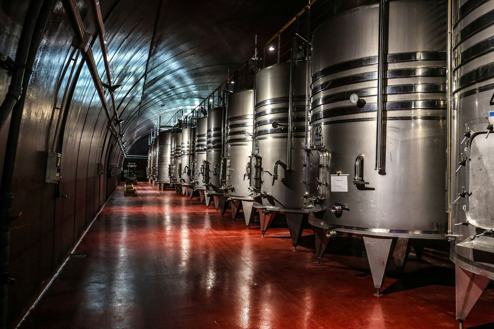

Cuisine de saison
La carte suit le marché, jamais l'inverse
Menus et prix par personne, service compris. Les plats changent plusieurs fois par semaine — cette page reflète la carte d'automne.
À la carte
La carte d'automne
Disponible aux deux services, en complément des menus.
Entrées
- Huîtres de Doëlan n°322 €Mignonette au poivre de Timut, pain de seigle maison
- Le jambon persillé d'automne19 €Condiment aux cornichons de la maison, beurre de pays
- Céleri rôti entier21 €Truffe noire du Périgord (en saison), noisettes torréfiées
- Tarte fine de céleri et huître24 €Crème d'oseille de la ferme des Terres Froides
- Œuf parfait de la Rivière18 €Velouté de châtaigne, éclats de champignons de saison
Plats
- Turbot sauvage de ligne58 €Beurre nacré aux algues, poireau brûlé
- Truite de la Dombes36 €Beurre blanc aux câpres frites, poireau torréfié
- Pigeonneau des Monts du Lyonnais54 €Jus corsé, betterave fumée, cromesquis de sabot
- Canard de Challans vieilli 14 jours62 €Pêches rôties en saison, jus au poivre de Sichuan
- Poularde demi-deuil (deux personnes)96 €Truffe sous la peau, légumes de la montée Saint-Sébastien
Desserts
- Praline de Lyon revisitée16 €Crème rose au poivre de Timut, tarte sablée
- Poire confite au vin de paille15 €Sarrasin torréfié, glace au lait ribot
- Le chocolat de Tain17 €Ganache 70 % caramel au beurre demi-sel, glace malt
- Fromages affinés de la mère Sève19 €Cinq pièces, confiture de cerises noires

Chaque dessert peut être adapté sans gluten sur demande.
La Cave
La carte des vins
400 références vieillies dans la cave voûtée du XVIIᵉ siècle, à 14 °C. Élias Roche compose des accords sur mesure — la sélection ci-dessous n'est qu'un aperçu.
Beaujolais & Bourgogne
- Morgon « Côte du Py » Jean Foillard 202268 €
- Fleurie « Poncié » Clos de la Roilette 202159 €
- Mâcon-Verzé Olivier Leflaive 202272 €
- Meursault Domaine Roulot 2020185 €
- Gevrey-Chambertin Duroché 2019148 €
Rhône, Jura & Savoie
- Côte-Rôtie « La Landonne » Guigal 2019210 €
- Cornas Domaine Clape 2020165 €
- Arbois Savagnin Ouillé Tissot 202174 €
- Château-Chalon Domaine Macle 2017198 €
- Roussette de Savoie « Altesse » Belluard 202258 €
Champagne & grandes occasions
- Champagne Jacques Selosse Initial265 €
- Champagne Ulysse Collin Les Pierrières132 €
- Hermitage La Chapelle Paul Jaboulet 2016320 €
- Château d'Yquem 2011 (demi-bouteille)290 €
Plus de 60 références au verre entre 9 € et 26 €. Ouverture d'une bouteille confidentielle sur demande : nous la layons pour vous.
